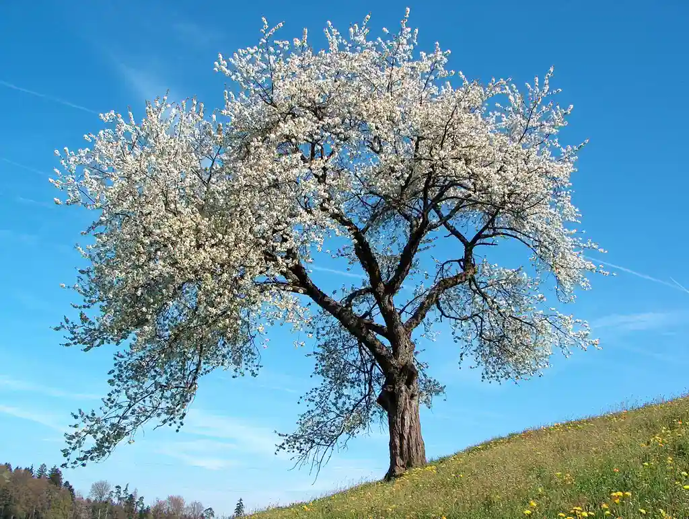

WebP vs JPEG
Основное преимущество — это размер. Сокращение размера положительно влияет сразу на четыре аспекта работы в интернете:
- Сайты со сжатыми WebP-картинками работают быстрее. Уходит меньше времени на обработку небольших файлов.
Даже если в статье будет под сотню изображений, компрессия спасет от чересчур долгих загрузок.
- Загружая на VDS маленькие изображения, можно сэкономить на пространстве жесткого диска.
- Пользователи будут тратить меньше мобильного трафика при посещении сайта со смартфона.
- Выделенный интернет-канал до сервера будет загружен гораздо меньше, если передаваемый медиаконтент меньше весит.
Еще один плюс к производительности.
- Главный недостаток JPEG — заметная потеря в качестве и детализации из-за недостаточно продуманных алгоритмов сжатия.
Это особенно заметно при приближении или когда у картинки изначально не слишком высокое разрешение.
У WebP качество картинки практически не теряется. Если ознакомиться с галереей Google, то станет понятно, что отличить их формат от высококачественных JPEG практически невозможно.
Это видно только по размеру файлов.

